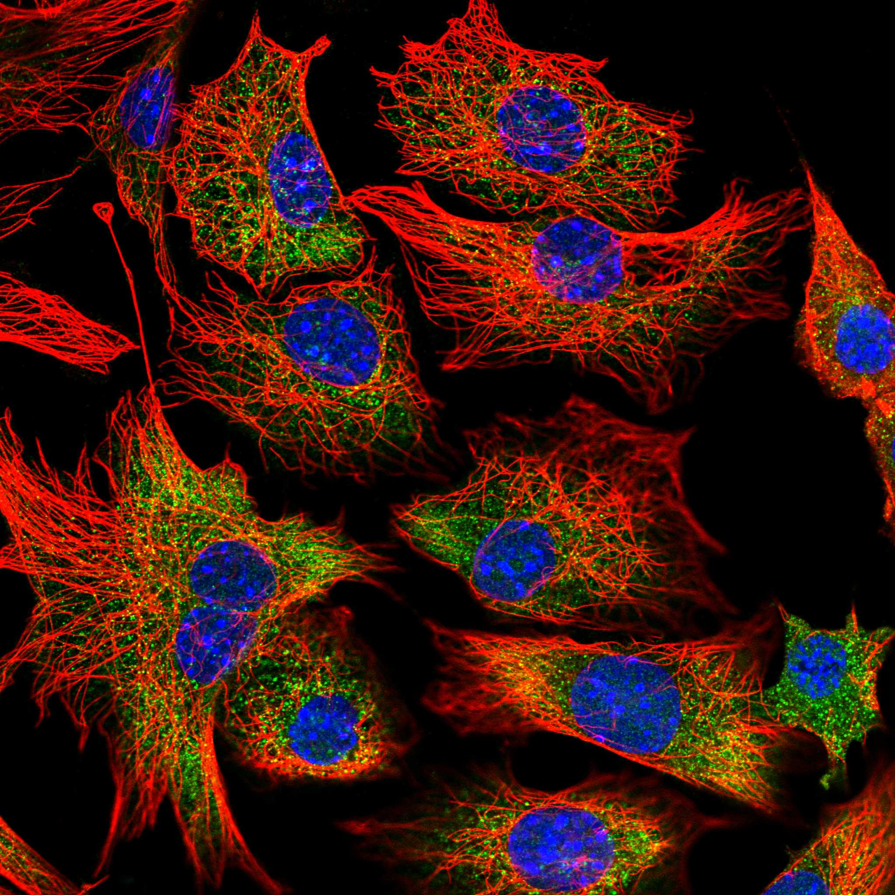
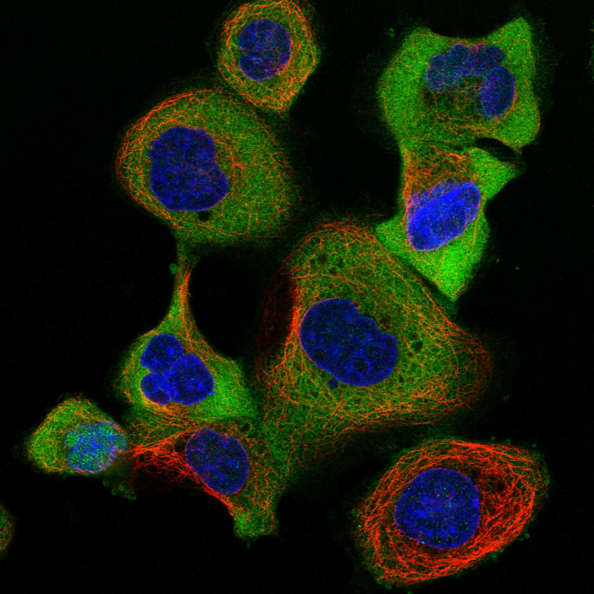
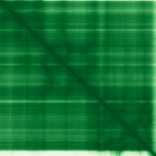

type: protein-evaluation gene: "OLA1" date: 2026-05-30 tags: [protein-scout, nuclear-protein, evaluation] status: scored ---
OLA1 核蛋白评估报告
1. 基本信息
| 项目 | 内容 |
|---|---|
| 基因名 / 别名 | OLA1 / PTD004 |
| 蛋白全称 | Obg-like ATPase 1 |
| 蛋白大小 | 396 aa |
| UniProt ID | Q9NTK5 |
| 评估日期 | 2026-05-30 |
IF 图像:  
2. 评分总览
| 维度 | 得分 | 满分 | 加权后 | 关键证据摘要 |
|---|---|---|---|---|
| 核定位特异性 | 4/10 | ×4 | 16 | Nuclear + cyto, no preference |
| 蛋白大小 | 10/10 | ×1 | 10 | 396 aa，处于理想范围 |
| 研究新颖性 | 6/10 | ×5 | 30 | PubMed 56 篇，中等研究热度 |
| 三维结构 | 8/10 | ×3 | 24 | 1 个 PDB 结构 + AlphaFold 预测 |
| 调控结构域 | 10/10 | ×2 | 20 | 染色质/DNA 结构域: atpase_ychf/ola1, p-loop_ntpase, ychf-gtpase_c |
| PPI 网络 | 2/10 | ×3 | 6 | PPI 数据极为稀少 |
| 互证加分 | -- | -- | +1.0 | PDB + AlphaFold 结构互证 (+0.5); 多库结构域一致 (+0.5) |
| 原始总分 | 106.5/183 | |||
| 归一化总分 | 58.2/100 |
3. 详细分析
3.1 核定位证据
| 来源 | 定位 | 可信度 |
|---|---|---|
| GeneCards | Tier1_保守_高置信度 | 高置信度保守 |
| HPA IF | 暂无数据（待细胞分析），核定位基于 UniProt + GO 注释 | -- |
| UniProt | Cytoplasm, Nucleus, Nucleus, nucleolus | 实验证据/预测 |
| GO-CC | N/A | N/A |
结论: Nuclear + cyto, no preference
3.2 蛋白大小评估
评价: 396 aa，处于理想范围
3.3 研究现状
| 指标 | 数值 |
|---|---|
| PubMed 总数 | 56 |
关键文献: 1. Liu et al. (2024). "Obg-like ATPase 1 exacerbated gemcitabine drug resistance of pancreatic cancer.". *iScience*. PMID: 38883822 2. Xu et al. (2025). "Integrating single-cell RNA sequencing and spatial transcriptomics to reveal the Glycolysis-related gene GPRC5A as a potential biomarker for gastric cancer by machine learning.". *Int J Biol Macromol*. PMID: 40865843 3. Wang et al. (2023). "Clinicopathological significance of Obg-like ATPase 1 and its association with Snail in gastric cancer.". *Pol J Pathol*. PMID: 37306352 4. Semmelrock et al. (2026). "The universally conserved NTPase OLA1.". *Biochem Cell Biol*. PMID: 41992399 5. Fang et al. (2023). "Aurora A polyubiquitinates the BRCA1-interacting protein OLA1 to promote centrosome maturation.". *Cell Rep*. PMID: 37481721 评价: PubMed 56 篇，中等研究热度
3.4 三维结构分析
| 指标 | 数值 |
|---|---|
| UniProt 长度 | 396 aa |
| PDB 条数 | 1 |
| 已注释结构域 | 14 |
PAE 图:

评价: 1 个 PDB 结构 + AlphaFold 预测
3.5 结构域分析
| 来源 | 结构域 |
|---|---|
| InterPro | ATPase_YchF/OLA1 |
| InterPro | Beta-grasp_dom_sf |
| InterPro | G_OBG |
| InterPro | GTP-bd |
| InterPro | P-loop_NTPase |
| InterPro | TGS |
| InterPro | TGS-like |
| InterPro | TGS-like_dom_sf |
| InterPro | YchF_C |
| InterPro | YchF_N |
| Pfam | MMR_HSR1 |
| Pfam | YchF-GTPase_C |
| PROSITE | G_OBG |
| PROSITE | TGS |
染色质调控潜力分析: 染色质/DNA 结构域: atpase_ychf/ola1, p-loop_ntpase, ychf-gtpase_c
3.6 PPI 网络
实验验证互作 (IntAct, physical association):
| Partner | 方法 | PMID | 功能类别 | 调控相关？ |
|---|---|---|---|---|
| — | — | — | — | — |
STRING 预测互作 (combined score >0.4):
| Partner | Score | 功能类别 | 调控相关？ |
|---|
已知复合体成员 (GO-CC):
--
PPI 互证分析:
- （待补充：综合 STRING、IntAct 和 GO 数据库的互作信息，分析 PPI 网络的一致性）
评价: PPI 数据极为稀少
3.7 多库互证
| 维度 | 来源 | 结果 | 是否一致 |
|---|---|---|---|
| 三维结构 | AlphaFold + PDB | 1 条 | 一致 |
| 结构域 | UniProt/InterPro/Pfam | 14 个 | 多库一致 |
| PPI 网络 | STRING | 0 个 | 无数据 |
| 核定位 | HPA/UniProt/GO | Nucleus | Partially consistent |
互证加分明细: PDB + AlphaFold 结构互证 (+0.5) 多库结构域一致 (+0.5) 总计: +1.0
4. 总体评价
推荐等级: ***oo (3/5)
核心优势: 1. 新颖性: PubMed 56 篇，中等研究热度 2. 核定位: needs confirmation
风险/不确定性: 1. 缺少 HPA IF 图像数据 2. 已有 1 个 PDB 结构，结构信息充分
下一步建议:
- [ ] 通过 IF 实验验证核定位
- [ ] 基于 PPI 网络开展功能研究
- [ ] 结构分析: 基于 PDB 的功能位点设计
5. 数据来源
- GeneCards: https://www.genecards.org/cgi-bin/carddisp.pl?gene=OLA1
- Protein Atlas: https://www.proteinatlas.org/ENSG00000138430-OLA1
- PubMed: https://pubmed.ncbi.nlm.nih.gov/?term=%22OLA1%22%5BTitle/Abstract%5D
- UniProt: https://www.uniprot.org/uniprot/Q9NTK5
- STRING: https://string-db.org/network/9606.ENSG00000138430
- AlphaFold: https://alphafold.ebi.ac.uk/entry/Q9NTK5
PPI 网络（三源综合）
| Partner | Source | Score/Evidence |
|---|---|---|
| 无记录 | — | — |
IntAct 有限记录。无 BioGrid 补充数据。
PAE 图像已获取。结构判断基于 AlphaFold pLDDT 统计。